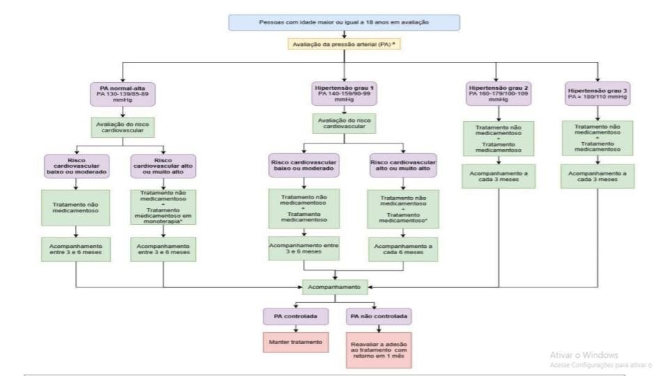

Hipertensão arterial
Relevância
Carga global da hipertensão
A hipertensão arterial é o principal fator de risco modificável para doenças cardiovasculares, acidente vascular cerebral, insuficiência cardíaca e doença renal crônica, contribuindo de forma significativa para a mortalidade e anos de vida ajustados por incapacidade (DALYs) no mundo. Estimativas do Global Burden of Disease Study indicam que mais de 1,3 bilhão de adultos apresentam hipertensão, sendo que cerca de dois terços vivem em países de baixa e média renda. Apesar dos avanços em diagnóstico e tratamento, a taxa global de controle permanece baixa, com menos de 25% dos indivíduos hipertensos atingindo metas pressóricas, refletindo desigualdades no acesso a serviços de saúde, medicamentos e programas de prevenção. A carga global cresce não apenas pela transição demográfica e envelhecimento populacional, mas também pela urbanização acelerada, dietas hipersódicas, sedentarismo e aumento do sobrepeso e obesidade.
Carga da hipertensão no Brasil
No Brasil, a hipertensão afeta aproximadamente 25% da população adulta, representando um dos principais problemas de saúde pública e a maior causa isolada de mortalidade cardiovascular. Dados da Pesquisa Nacional de Saúde (PNS 2019) indicam que a prevalência é maior em pessoas com menor escolaridade, nas regiões Sudeste e Sul, e aumenta significativamente com a idade, ultrapassando 60% entre idosos. A hipertensão contribui para cerca de 50% das mortes por doenças cardiovasculares e para elevada demanda por hospitalizações no Sistema Único de Saúde (SUS), especialmente por acidente vascular cerebral e infarto do miocárdio. Embora o Brasil tenha ampliado o acesso a medicamentos e o rastreamento na atenção primária, a taxa de controle pressórico ainda é insuficiente, o que mantém alta a carga de complicações e custos associados.
Definição clínica
A definição diagnóstica de hipertensão arterial depende das diretrizes utilizadas, mas as principais organizações internacionais e brasileiras apresentam critérios muito semelhantes.
Medidas devem ser feitas de forma adequada, com paciente em repouso, sem consumo recente de cafeína, álcool ou cigarro, usando manguito de tamanho apropriado.
Critérios diagnósticos em adultos
Segue o quadro comparativo atualizado com os critérios diagnósticos e classificação da hipertensão nas três principais diretrizes:
- Diretriz Brasileira de Hipertensão 2020 (SBH/SBC/SBN)
- Diretriz Europeia 2024 (ESH/ESC)
- Diretriz americana (ACC/AHA 2017)
Diagnóstico e Classificação da Hipertensão
| Diretriz | Diretriz Brasileira de Hipertensão 2020 | Diretriz Europeia 2024 | Diretriz americana |
|---|---|---|---|
| Pressão Normal | < 120 / < 80 mmHg | < 120 / < 80 mmHg | < 120 / < 80 mmHg |
| Pré-hipertensão / Elevada | 120–139 / 80–89 mmHg (pré-hipertensão) | 120–129 / 80–84 mmHg (normal-alta) 130–139 / 85–89 mmHg (normal-alta alta) |
120–129 / < 80 mmHg (elevada) |
| Hipertensão – Estágio 1 | ≥ 140 / 90 mmHg | ≥ 140 / 90 mmHg (Grau 1: 140–159 / 90–99 mmHg) | 130–139 / 80–89 mmHg |
| Hipertensão – Estágio 2 | — (usa classificação geral ≥ 140/90) | Grau 2: 160–179 / 100–109 mmHg | 140–159 / 90–99 mmHg |
| Hipertensão – Estágio 3 | — | Grau 3: ≥ 180 / ≥ 110 mmHg | ≥ 160 / ≥ 100 mmHg |
| Diagnóstico com MAPA (24h) | Média ≥ 130/80 mmHg (24h) Vigília ≥ 135/85 mmHg Sono ≥ 120/70 mmHg |
Mesmo critério da brasileira | Mesmo critério |
| Diagnóstico com MRPA | Média ≥ 135/85 mmHg | ≥ 135/85 mmHg | ≥ 130/80 mmHg (alguns consensos americanos usam ≥ 135/85 mmHg para MRPA) |
Principais diferenças
- Brasil (2020) e Europa (2024): mantêm ponto de corte ≥ 140/90 mmHg no consultório para diagnóstico.
- EUA (ACC/AHA 2017): ponto de corte mais baixo, ≥ 130/80 mmHg, o que aumenta o número de pessoas diagnosticadas.
- Europa subdivide a hipertensão em graus 1, 2 e 3 conforme gravidade; Brasil não detalha dessa forma.
- Para MAPA e MRPA, há mais consenso internacional, com corte principal em 130/80 mmHg (24h) e 135/85 mmHg (domicílio).
Observações importantes
O diagnóstico não deve ser baseado em uma única medida isolada, exceto em casos de PA muito elevada associada a sinais de lesão aguda de órgãos-alvo (emergência hipertensiva).
A MAPA e a MRPA podem ajudar a identificar Hipertensão do avental branco (PA elevada só no consultório) e Hipertensão mascarada (PA normal no consultório, mas elevada fora dele).
Em pacientes com diabetes, doença renal crônica ou risco cardiovascular muito alto, alguns consensos sugerem metas de controle mais rigorosas, mas o ponto de corte para diagnóstico permanece o mesmo.
Critérios de inclusão de pacientes
Começamos com os seguintes critérios:
Registro de um código CID10 (I10|I11|I12|I13|I14|I15|I16|O100|O104|O109|O13|R030)
OU uma aferição de PA acima de 180/110 mmHg
OU prescrição de HIDROCLOROTIAZIDA|CLORTALIDONA|INDAPAMIDA|FUROSEMIDA|
ESPIRONOLACTONA|CAPTOPRIL| ENALAPRIL|LISINOPRIL|RAMIPRIL|
PERINDOPRIL|BENAZEPRIL|LOSARTANA|VALSARTANA| CANDESARTANA|
IRBESARTANA|OLMESARTANA|TELMISARTANA|ANLODIPINO|NIFEDIPINO|
FELODIPINO|VERAPAMIL|DILTIAZEM|ATENOLOL|PROPRANOLOL|METOPROLOL|CARVEDILOL|
BISOPROLOL|METILDOPA|CLONIDINA|HIDRALAZINA|NITROPRUSSETO DE SÓDIO|ALISQUIRENO
conforme código abaixo:
-- Hipertensão Arterial Sistêmica CASE WHEN ( REGEXP_CONTAINS(COALESCE(condicoes_ids, ''),
r'I10|I11|I12|I13|I14|I15|I16|O100|O104|O109|O13|R030') OR
pressao_sistolica > 180 OR pressao_diastolica > 110 OR
REGEXP_CONTAINS(UPPER(COALESCE(prescricoes_nomes, '')),
r'HIDROCLOROTIAZIDA|CLORTALIDONA|INDAPAMIDA|FUROSEMIDA|ESPIRONOLACTONA|CAPTOPRIL|
ENALAPRIL|LISINOPRIL|RAMIPRIL|PERINDOPRIL|BENAZEPRIL|LOSARTANA|VALSARTANA|
CANDESARTANA|IRBESARTANA|OLMESARTANA|TELMISARTANA|ANLODIPINO|NIFEDIPINO|
FELODIPINO|VERAPAMIL|DILTIAZEM|ATENOLOL|PROPRANOLOL|METOPROLOL|CARVEDILOL|
BISOPROLOL|METILDOPA|CLONIDINA|HIDRALAZINA|NITROPRUSSETO DE SÓDIO|ALISQUIRENO') )
THEN TRUE ELSE FALSE END AS HAS_tempAlém disso, criamos a variável primeira_medida, para definir quando teve uma aferição acima de 140/90 mmHg, mas inferior a 180/110 mmHg:
-- VARIÁVEL primeira_medida
CASE WHEN (
(pressao_sistolica >= 140 AND pressao_sistolica < 180) OR
(pressao_diastolica >= 90 AND pressao_diastolica < 110)
) THEN TRUE ELSE FALSE END AS primeira_medidaDesta variável geramos um contador de aferições de PA elevadas, entre 140/90 e 180/110 mmHg.
SUM(CASE WHEN (pressao_sistolica > 140 OR pressao_diastolica > 90) THEN 1 ELSE 0 END)
OVER (PARTITION BY cpf ORDER BY entrada_data ASC ROWS UNBOUNDED PRECEDING)
AS contador_pressao_altaEm seguida, quando o contador chegar a 2, torna a variável HAS_temp TRUE, caso ainda seja FALSE.
CASE
WHEN contador_pressao_alta >= 2 THEN TRUE
ELSE HAS_temp
END AS HAS_ajustadoDesta forma pegamos todos os CIDs relacionados à HAS, medicamentos prescritos e que são usados para HAS, bem como as aferições de PA, sendo requerido apenas uma acima de 180/110 mmHg ou duas acima de 140/90 mmHg.
Sobre as medicações, ainda restam dúvidas sobre a prescrição de alguns medicamentos em pacientes com outras condições cardiológicas e que não tenham HAS.
Informações que devem ser visualizadas pelas ESFs
| Informação | Importância | Limitações para Obtenção |
| Nome completo | Identificação nominal; permite ação direta pela equipe | Pode haver duplicidades, erros de digitação ou homônimos |
| Data de nascimento / idade | Avaliação de risco (idade >65 anos); estratificação e rastreio infantil/adolescente | Às vezes preenchida incorretamente ou ausente |
| Sexo | Fator de risco (homens têm maior risco cardiovascular); define metas terapêuticas | Campo às vezes não binário ou desatualizado |
| Contato (telefone) | Essencial para busca ativa | Desatualização. Áreas de vulnerabilidade social |
| Unidade de saúde / equipe / microárea | Identifica responsabilidade sanitária; organização da busca ativa | Pode haver desatualização de vínculo por mudança de território ou ausência de cadastro |
| Diagnósticos registrados (CID) | Identificação direta de hipertensão e comorbidades | CID pode não ser ativado mesmo quando a condição está presente |
| Últimas aferições de PA (data e valor) - quantas? | Verifica controle e adesão ao monitoramento | PA pode ser medida, mas não registrada corretamente no campo específico |
| Histórico de PA ≥140/90 mmHg em duas ou mais aferições | Critério diagnóstico de hipertensão | Requer histórico longitudinal e padronização das unidades de entrada |
| Histórico de PA ≥ 180/110 com evidência de Lesão de Órgão-Alvo | Critério diagnóstico de hipertensão | Leitura do registro de LOA em prontuário, se realizado. |
| Prescrição atual de anti-hipertensivos | Confirma tratamento em curso | Pode haver prescrição sem registro no PEP, especialmente em papel |
| Data da última prescrição | Avalia descontinuidade ou abandono do tratamento | Sistema pode não armazenar a validade da prescrição, apenas a emissão |
| Comorbidades (DM, DRC, dislipidemia, considerar tabagismo etc.) | Influencia metas pressóricas, cálculo de risco, escolha de tratamento | Às vezes não registradas com CID ou não atualizadas |
| Histórico de LOA (ex: DAC, AVE, IC) | Essencial para estratificação de risco e intensificação terapêutica | Informações fragmentadas em laudos ou evoluções textuais (difíceis de minerar) |
| Peso, altura, IMC, circunferência abdominal | Cálculo de risco cardiovascular; obesidade é fator modificável importante | Dados ausentes ou desatualizados; campos livres dificultam extração automatizada |
| Aba para ver exames laboratoriais recentes | Creatinina/TFGe, potássio, perfil lipídico, glicose, EAS — necessários para diagnóstico e acompanhamento | Pode não estar integrado ao sistema de prontuário; exames fora da rede pública |
| Frequência cardíaca (FC) | Fator de risco? | Muitas vezes não registrada se não for consulta médica |
| Estratificação de risco cardiovascular | Direciona tratamento e metas terapêuticas | Nem sempre feita ou registrada no prontuário |
| Avaliação da adesão / observações da equipe | Apoia gestão do cuidado e decisões clínicas | Informações subjetivas, muitas vezes em texto livre |
| Participação em grupo educativo / MEV | Importante para desfechos positivos e adesão | Raramente sistematizado ou vinculado ao prontuário eletrônico |
| Data da última consulta médica e de enfermagem | Verifica continuidade de cuidado | Pode não refletir atendimento real (agendado e não comparecido, por exemplo) |
| Desejo reprodutivo (mulheres em idade fértil) - se faz uso de algum contraceptivo | Fundamental para orientar contracepção segura e riscos gestacionais | Nem sempre questionado ou registrado sistematicamente |
| Rastreamentos pendentes (ex: colpocitológico, mamografia, ISTs) | Ações integradas à linha de cuidado, inclusive cardiovascular | Geralmente registrados em sistemas separados ou como texto livre |
Lacunas de cuidado para HAS
1 - Ausência de rastreamento
Ausência de registro anual de PA em adultos (≥ 18 anos) saudáveis se a PA do consultório < 140/90 mmHg. Ausência do registro anual de PA em crianças e adolescentes que deve ser realizado a partir dos 3 anos de idade. Em crianças de 1 ano a 13 anos de idade, a PA é considerada normal se estiver abaixo do percentil 90 (P90) para idade, altura e sexo, portanto, PA ≥ P90 corresponde a rastreio positivo para HAS (Material Suplementar 1).
Em adolescentes a partir de 13 anos de idade, a PA é considerada normal se estiver abaixo de 120 mmHg/80 mmHg.
Crianças menores de 3 anos de idade devem ter a PA medida em caso de presença de pelo menos uma das seguintes condições clínicas relacionadas à HAS, a serem avaliadas no momento da anamnese: Restrição de crescimento intrauterino; Crianças prematuras; Muito baixo peso ao nascer; Cardiopatia congênita operada ou não, como coarctação da aorta; História de internação em unidade de terapia intensiva (UTI) neonatal; Antecedente de cateterização umbilical pós-natal. Doença renal crônica (DRC), infecções urinárias de repetição, malformações renais, estenose da artéria renal, hematúria e proteinúria, história familiar de doença renal: Transplante de órgãos sólidos, câncer e transplante de medula óssea; Hipertensão intracraniana; Obstruções da aorta abdominal (neurofibromatose, síndrome de Williams, síndrome de Alagille, arterite de Takayasu); Distúrbios endocrinológicos, excesso de catecolaminas, mineralocorticoides, hiperplasia adrenal congênita, hiperaldosteronismo familiar, hipertireoidismo, tumores (feocromocitoma); Exposição a metais tóxicos, como mercúrio; Doenças sistêmicas que levam à HAS, como esclerose tuberosa; Uso de medicamentos corticoides e anti-inflamatórios não esteroidais; Sobrepeso ou obesidade; História familiar da HAS.
2 - Falhas no diagnóstico
Técnica inadequada de aferição: Paciente não relaxado, falando Bexiga cheia Prática recente de atividades físicas, uso recente de cafeína/estimulantes Utilizar bolsa de borracha do manguito de dimensão inadequada para a circunferência do braço Altura inadequada do braço Uso de aparelho digital em ritmos cardíacos irregulares Diagnóstico baseado em medição única da PA em consultório. Ausência de diagnóstico e início de tratamento em medição única quando a HA é estágio 3, especialmente em pacientes de alto risco. Não considerar a possibilidade de HA mascarada em pacientes com pré-hipertensão (PAS 130-139/ PAD 85-89). Não considerar a possibilidade de HA do avental branco em pacientes com HA estágios 1 e 2 (PAS 140-179/ PAD 90-109).
3 - Ausência da ativação do CID correspondente:
I10 – Hipertensão essencial (primária)
I11 – Doença cardíaca hipertensiva
I12 – Doença renal hipertensiva
I13 – Doença cardíaca e renal hipertensiva
I15 – Hipertensão secundária
O10.0 – Hipertensão essencial pré-existente complicando a gravidez, o parto e o puerpério
O10.4 – Hipertensão secundária pré-existente complicando a gravidez, o parto e o puerpério
O10.9 – Hipertensão pré-existente não especificada, complicando a gravidez, o parto e o puerpério
O13 – Hipertensão gestacional (induzida pela gravidez) sem proteinúria significativa
R03.0 – Pressão arterial elevada sem diagnóstico de hipertensão4 - Ausência de identificação de fatores de risco:
Não investigar fatores de risco (FR) ou Lesão de Órgão Alvo (LOA) em todos os pacientes com diagnóstico de pré-HA ou HA:
FR:
Idade > 65 anos
Sexo (homens > mulheres)
Frequência cardíaca (> 80 bpm)
Aumento do peso corporal
Diabetes melito
Dislipidemia/Hipercolesterolemia
História familiar de DCV (mulheres <65a e homens <55a)
História familiar de HAS
Tabagismo
Fatores psicossociais e/ou socioeconômicos (alimentação, sedentarismo);
LOA:
Dç. Cerebrovascular (AVEi ou AVEh, AIT)
DAC
IC/FA
DAOP
DRC moderada a grave (estágio 3 ou maior)
RAC (Relação Albuminúria/Creatinina) = 30 a 300 mg/g
5 - Ausência de identificação de complicações crônicas:
LOA:
Dç. Cerebrovascular (AVE i ou h, AIT)
DAC
IC/FA
DAOP
DRC
Oftalmopatias
6 - Ausência de solicitação e registro de exames e parâmetros biométricos no diagnóstico:
Fundoscopia: avaliação de retinopatia hipertensiva (encaminhamento para avaliação por oftalmologista)
Exames complementares:
Potássio
Creatinina/TFGe
Perfil lipídico
EAS
ECG
Exame físico:
Ausculta cardiovascular
Ausculta pulmonar
Exame neurológico e estado cognitivo
Palpação coração e artérias carótidas
Palpação de artérias periféricas
Comparação dos valores de pressão arterial em ambos os braços, medidos pelo menos uma vez, em cada um dos braços
Parâmetros biométricos:
Peso
Altura
IMC
FC
Circunferência abdominal
7 - Ausência de avaliação do cálculo do risco cardiovascular no diagnóstico e anual:
Não estratificar o RCV do paciente com HA utilizando calculadoras validadas:
UKPDS
Escore de risco global
Calculadora HEARTS (ideal usar em pessoas entre 40 a 74 anos de idade)
8 - Pessoa Hipertensa sem registro de consulta nos últimos 6 meses:
- Mínimo 1 consulta médica e 1 consulta de enfermagem ao ano.
9 - Ausência de solicitação e registro de fundoscopia, exames complementares e parâmetros biométricos nos últimos 12 meses:
Parâmetros biométricos:
Peso
Altura
IMC
FC
Circunferência abdominal
Exames complementares:
Potássio
Creatinina/TFGe
Perfil lipídico
EAS
ECG
Não solicitar microalbuminúria urinária para cálculo de RA em pacientes HA com DM.
10 - Ausência do cálculo da Taxa de Filtração Glomerular:
- Utilizando creatinina sérica para cálculo, preferencialmente CKD-EPI 2021 (exceto exceções, como extremos de peso)
11 - Ausência de identificação de fatores de risco modificáveis e ausência de estímulos à melhorias para modificações:
Tabagismo, alcoolismo, obesidade, dislipidemia, sedentarismo, alimentação
Negligenciar papel de grupos educativos na educação em saúde e adesão ao tratamento
Não estimular MEV, associada ou não ao tratamento medicamentoso
12 - Ausência de oportunizar testagem de ISTs e de outros rastreamentos indicados (mamografia, colpocitológico)
13 - Ausência de avaliação de desejo e possibilidade de gestar e consideração de planejamento reprodutivo em mulheres em idade fértil;
Não aconselhar e prescrever contracepção de alta eficácia em mulheres em idade fértil
Mulheres com hipertensão ou risco cardiovascular elevado não devem usar contraceptivos orais combinados. Nestes casos, são preferíveis métodos não hormonais ou progestagênios isolados.
14 - Ausência de controle adequado de perfil lipídio, IMC e peso
15 - Ausência de prescrição de estatina em doses otimizadas
Não prescrever estatina de acordo com colesterol LDL e cálculo do RCV
Dificuldade de acessar estatinas de alta potência via LME
16 - Ausência de avaliação de alvo de colesterol LDL
17 - Falha na prescrição do tratamento medicamentoso
Não utilizar as classes de anti-hipertensivos preferenciais para o uso em monoterapia ou combinação, sendo elas:
IECA (Inibidores da enzima conversora de angiotensina)
BRA (Bloqueadores dos receptores de angiotensina II)
Diurético tiazídico ou similar
BCC (Bloqueador de canal de cálcio)
BB (Betabloqueadores)
Utilizar monoterapia medicamentosa em hipertensos estágio 1 de moderado e alto risco, ou que possuam LOA, e hipertensos estágios 2 e 3 independe do risco cardiovascular:
- A monoterapia deve ser considerada apenas para hipertensos estágio 1 de baixo risco cardiovascular e para muito idosos e/ou indivíduos frágeis (≥ 75 anos, vive em instituições de longa permanência para idosos, encontra-se acamado, esteve hospitalizado recentemente por qualquer razão, apresente doenças sabidamente causadoras de incapacidade funcional, encontra-se com pelo menos uma incapacidade funcional básica, ou viva situações de violência doméstica).
Não iniciar o tratamento com combinação de dois fármacos, sendo eles um IECA, ou BRA, associado a DIU tiazídico ou similar ou BCC:
- Diretrizes recentes recomendam o uso de diferentes classes de medicamentos como tratamento inicial em sua menor dose e, caso necessário, sua associação a outras classes terapêuticas até que o controle da PA seja alcançado, visando ao sucesso terapêutico, minimização de eventos adversos indesejáveis e abandono do tratamento. Essa estratégia é recomendada em detrimento do aumento da dose do medicamento em monoterapia ou troca por outro medicamento em monoterapia
- Se mesmo com a combinação das duas classes terapêuticas não houver alcance da meta terapêutica, então, deve-se aumentar gradualmente as doses prescritas até que o controle da PA seja alcançado, observando-se a dose máxima recomendada dos medicamentos.
Não prescrever três fármacos, habitualmente IECA ou BRA associado a DIU tiazídico ou similar e BCC, caso não se atinja o controle da PA com combinação de dois fármacos:
- Se mesmo com 2 classes associadas e otimizadas o controle da PA não for alcançado, recomenda-se incluir uma terceira classe em sua dose mínima, aumentando-a gradualmente, caso não haja o controle da PA esperado, até a dose máxima.

18 - Não considerar meta pressórica adequada
- Não utilizar meta pressórica <130/80 em pacientes portadores de DRC, DM2, IC e/ou DAC.
19 - Não encaminhar paciente à Cardiologia - Hipertensão Arterial Resistente via SER em caso de HA resistente ou suspeita de HA secundária:
HA resistente: PA de consultório que permanece com valores ≥140/90 mmHg, com o uso de três ou mais classes de fármacos anti-hipertensivos com ações sinérgicas, em doses máximas preconizadas ou toleradas, sendo um deles preferencialmente um diurético tiazídico; ou uso de quatro ou mais fármacos anti-hipertensivos para alcançar o controle da PA;
HA secundária suspeita: HA estágio 3 < 30 anos ou > 55 anos; HA resistente ou refratária; Tríade do feocromocitoma: crises de palpitações, sudorese e cefaleia; Indícios de apneia obstrutiva do sono; Hipopotassemia espontânea ou severa induzida por diuréticos (< 3,0 mEq/L); Exame de urina anormal (hematúria glomerular (dismórfica) ou presença de albuminúria/proteinúria), aumento de creatinina sérica ou alterações de imagem renal
Educação Médica Continuada
Referências Bibliográficas
MCEVOY, John William; TOUYZ, Rhian M.; MCCARTHY, Cian P.; BRUNO, Rosa Maria; et al. 2024 ESC Guidelines for the management of elevated blood pressure and hypertension. European Heart Journal, v. 45, n. 38, p. 3912–4018, 2024. Disponível em: https://doi.org/10.1093/eurheartj/ehae178. Acesso em: 24 jul. 2025.
BARROSO, Weimar Kunz Sebba; RODRIGUES, Cibele Isaac Saad; BORTOLOTTO, Luiz Aparecido; MOTA‑GOMES, Marco Antônio; et al. Diretrizes Brasileiras de Hipertensão Arterial – 2020. Departamento de Hipertensão Arterial da Sociedade Brasileira de Cardiologia, 2020. Disponível em: http://departamentos.cardiol.br/sbc-dha/profissional/pdf/Diretriz‑HAS‑2020.pdf. Acesso em: 24 jul. 2025
BRASIL. Ministério da Saúde. Comissão Nacional de Incorporação de Tecnologias no SUS (Conitec). Relatório preliminar – Protocolo Clínico e Diretrizes Terapêuticas de Hipertensão Arterial Sistêmica (PCDT–HAS). Brasília: Ministério da Saúde, 13 mar. 2025. Disponível em: https://www.gov.br/conitec/pt-br/midias/consultas/relatorios/2025/relatorio-preliminar-pcdt-hipertensao-arterial-sistemica-cp-11/@(download/file?) . Acesso em: 24 jul. 2025.
Secretaria Municipal de Saúde. Subsecretaria de Atenção Primária, Vigilância e Promoção da Saúde. Superintendência de Atenção Primária. Hipertensão: manejo clínico em adultos. - 1ª ed. Rio de Janeiro: SMS, 2016. 24 p. (Série F. Comunicação e Educação em Saúde) (Coleção Guia de Referência Rápida, nº 6)
_____